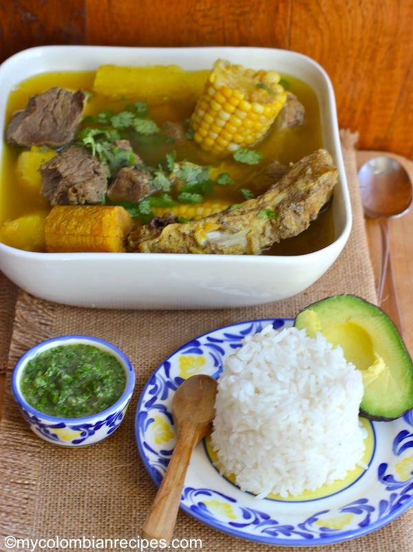

Plato típico: Sancocho (Antioquia)

Descripción del plato típico
El sancocho de costilla es un plato tradicional colombiano preparado con costilla de res, yuca, papa, plátano y mazorca. Es una comida típica para compartir en familia, especialmente durante los fines de semana, festividades y reuniones.
Ingredientes para la receta
- 1kg de costilla de res
- 2 Mazorcas
- 2 Yucas peladas y cortadas en trozos
- 4 Papas peladas y cortadas en trozos
- 1 Platano verde
- 1 Platano maduro
- 4 Dientes de ajo
- 2 Cucharadas de caldo de gallina o carne
- 1 Manojo de cilantro
- 4 Ramas de cebolla verde picadas
- 1 Cebolla blanca
- Sal al gusto
- Arroz, aguacate y limón para acompañar
Paso a paso de la preparación
- Cocinar la costilla: Pon la costilla en agua caliente con la cebolla verde, cebolla blanca, ajo y caldo de gallina o carne. Cocina hasta que la carne esté blanda.
- Preparar los ingredientes: Pela y corta la yuca, las papas y el plátano verde. Lava las mazorcas y el plátano maduro.
- Agregar yuca, mazorca y plátano: Cuando la costilla esté blanda, agrega la yuca, las mazorcas y el plátano verde. Añade sal, cebolla y cilantro, y cocina durante unos 10 minutos.
- Agregar papa y plátano maduro: Corta el plátano maduro con su cáscara y agrégalo junto con las papas. Cocina hasta que los ingredientes estén blandos.
- Finalizar el sancocho: Apaga el fuego y agrega cebolla verde y cilantro picados. Tapa y deja reposar unos minutos.
- Servir: Sirve el sancocho caliente y decóralo con cilantro y cebolla picada. Puedes acompañarlo con limón, arroz blanco y aguacate.
Video de la receta
Video de la receta aqui